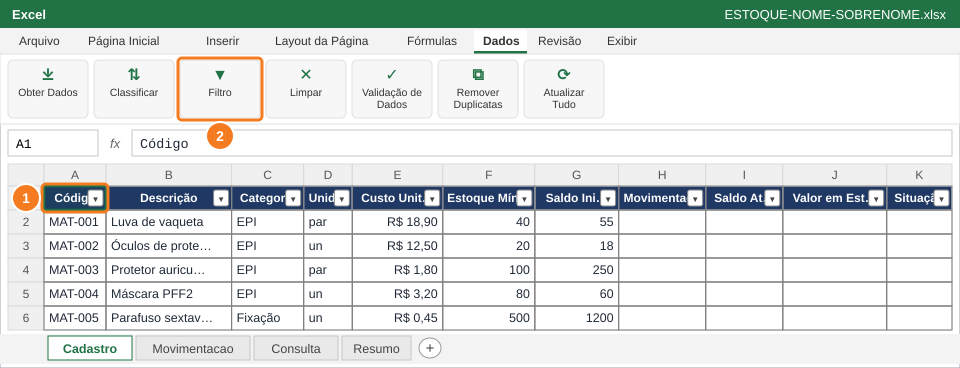
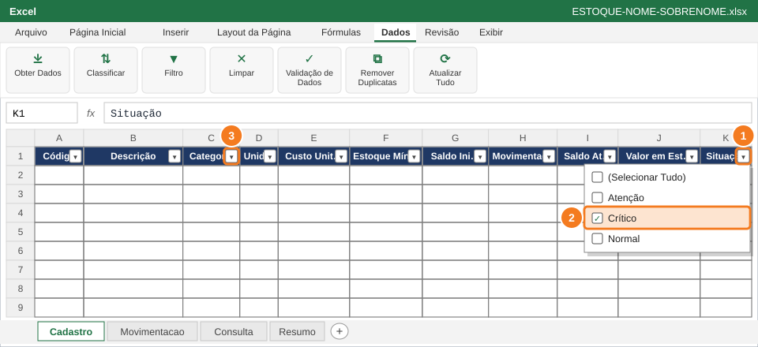
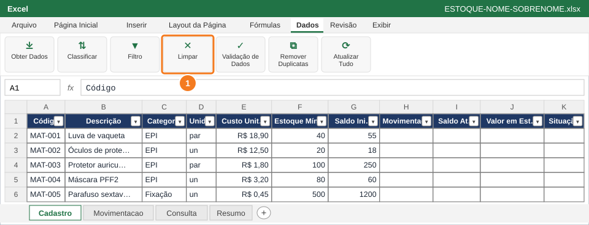
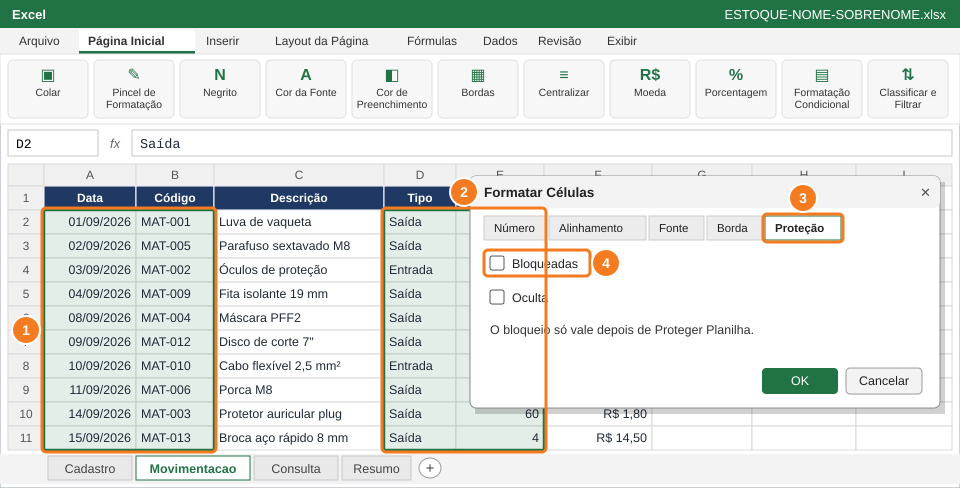
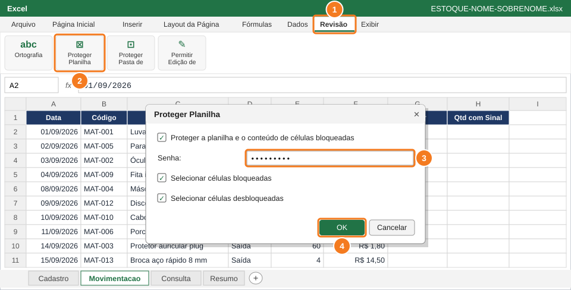
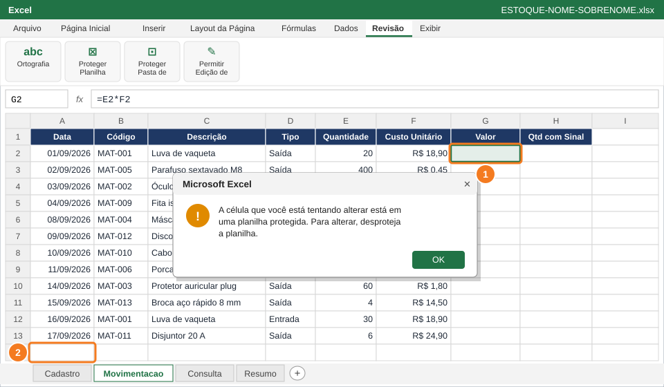
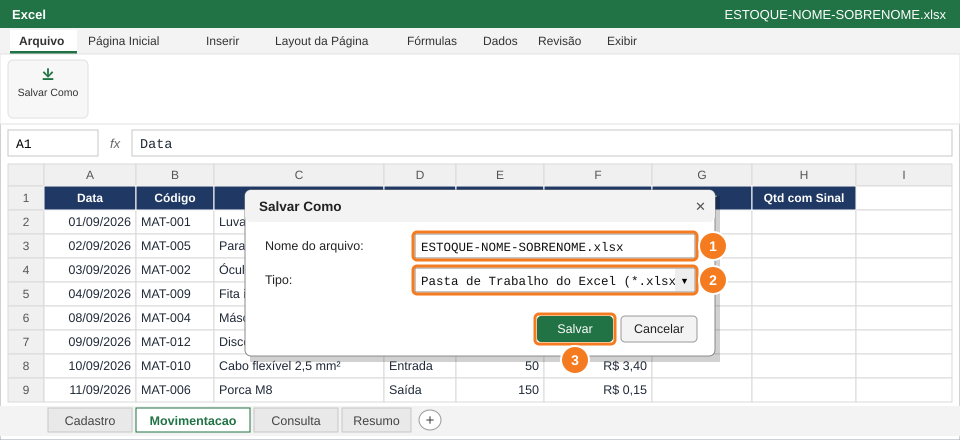

SENAI · Análise de Dados Aplicada à Gestão
Questão 6 — Filtro, proteção e entrega
Atividade Prática de Excel — Controle de Estoque do Almoxarifado
Atividade prática avaliativa⏱ 20 min1,5 pontos7 passos
Nome:
Turma:
Data: 29/09/2026
🎯 O que você vai fazer
Usar o AutoFiltro para responder a uma pergunta do gerente, proteger as fórmulas contra alterações acidentais e entregar o arquivo.
Você vai usar
- AutoFiltro (Ctrl+Shift+L)
- Formatar Células → Proteção
- Proteger Planilha
- Salvar Como .xlsx
Aba de trabalho: Cadastro, Resumo e Movimentacao · Slides de apoio: Arquivo 4 — slides 28–33
1
Ligue o AutoFiltro no Cadastro

Clique em A1 (1) e ligue o Filtro (2): aparecem setinhas nos títulos.
2
Filtre os itens críticos de EPI

Setinha de Situação (1) → só Crítico (2). Depois, setinha de Categoria (3) → só EPI.
3
Limpe os filtros

Guia Dados → Limpar (1): todas as linhas voltam a aparecer.
4
Desbloqueie as células de digitação

Selecione A2:B100 (1) e, com Ctrl, D2:E100 (2). Aba Proteção (3) → desmarque Bloqueadas (4).
5
Proteja a planilha com senha

Revisão (1) → Proteger Planilha (2) → senha (3) → OK (4).
6
Teste a proteção

Tentar mudar a fórmula de G2 (1) mostra o aviso. Digitar em A14 (2) continua funcionando.
7
Salve e entregue o arquivo

Nome do arquivo (1), tipo .xlsx (2) e Salvar (3).
📋 Como esta questão será avaliada
| Critério | Pontos |
|---|
| Filtro Crítico + EPI aplicado e item anotado em Resumo!B25 | 0,5 |
| Células de digitação da Movimentacao desbloqueadas | 0,4 |
| Planilha Movimentacao protegida com a senha senai2026 | 0,3 |
| Arquivo salvo em .xlsx com o nome pedido | 0,3 |
| Total da questão | 1,5 |